1. Introduction
Advanced gradients are two dimensional images comprised of smooth transitions and sharp discontinuities. There are a number of methods for defining advanced gradients, such as:-
Mesh based gradients
-
Diffusion curves
Each method has its own advantages. Mesh based gradients are typically very fast to render, but the markup to describe them is verbose and makes animation difficult. Diffusion curves on the other hand are a compact representation based on the traditional artist’s workflow of sketching outlines and filling with colour.
2. Diffusion Curves
Diffusion curves are a compact representation for specifying advanced gradient fills. A diffusion curve is a continuous series of colour constraints, where the colour constraint sets a colour that is to be diffused outwards from either the left, the right, or both sides of the curve. The colours diffusing outwards from a curve mix with other colours diffusing outwards from other diffusion curves, to create a gradient image. In this way, many diffusion curves may work together to create a complex image.2.1. Use Cases
Where would diffusion curves provide benefits to the web platform?-
Icons - a particularly good use case given the small size and requirements for scalability.
-
Complex shading - as found in comics and cartoons (e.g. Marvel comics)
-
Photograph vectorisation - scalable representation of natural images
-
Conical gradients and other gradient primitives not natively supported
-
Animated advanced gradients - with a compact representation, diffusion curves are easily animated compared to meshes
-
A higher level representation for Mesh Based Gradients benefits authors
2.2. Diffusion Curve Patches
Diffusion curve patches are a paint server. Their use is similar to other SVG gradients (linear and radial).
A patch is rectangular and may include one or more diffusion curves paths. Each diffusion curve path is described using standard SVG path syntax and may have one or more stops that specify color constraints at positions along the path. Colour constraints may apply to either side of the path (left or right) or both sides.
The rendered contents of the patch comprise smooth transitions of colour between the diffusion curve paths.
2.3. Specifying Diffusion Curve Patches
2.3.1. Values
- color-profile
-
[<path-pos>? <dc-constraint-set>]#
The color-profile attribute utilises a command syntax for specifying colour constraints at positions along the path.
In the grammar for color-profile, path-pos is optional. It may be omitted for some entries or for all entries.Any set of color-profile entries without a path-pos are placed equidistant along a sub-section of the path.
That sub-section is defined as the section of path from the previous color-profile entry with a path-pos, or the start of the path if none present, to the next color-profile entry with a path-pos, or the end of the path if none present.
The color-profile entries are placed such that there will be one color-profile entry at the start of the sub-path and one color-profile entry at the end of the sub-path, with all other color-profile entries placed evenly between.
color-profile="LR green, LR red, LR red, LR blue"
No color-profile entries have a path-pos. The sub-path is equivalent to the full path. The color-profile entries are placed equidistant along the path, with the first and last falling on the first and last points of the path respectively.
color-profile="LR green, 40% LR purple, LR red, LR red, 60% LR cyan, LR blue"
With two color-profile entries that have a path-pos, this path is sub-divided into three sub-paths.
The first sub-path extends from the start point of the path to the first color-profile entry with a path-pos (purple). The first color-profile entry (green) is placed on the start point of the sub-path as this results in the entries being placed equidistant and maintains the rule that a color-profile entry must be placed at the start and end points of the sub-path.
Likewise for the third sub-path - from the fifth color-profile entry (cyan) to the end point of the path.
The middle sub-path extends from the purple to the cyan color-profile entries. The purple and cyan entries occupy the start and end points of the sub-path, so the red entries are placed between them at positions that result in the four color-profile entries being equidistant.
- dc-constraint-set
-
[[L <color> <color>?] || [R <color> <color>?]] | [LR? <color> <color>?]
Specifies a set of color constraints that fall upon a position of the path.
Color constraints may be specified independently on the left and right hand sides of the path, or the color constraint may be specified to affect both sides of the path.
Normally, colors transition smoothly along the path from one color constraint to the next. If multiple colors are specified at one position, an immediate transition from the first to the second color occurs.
- path-pos
-
[sub <number>]? [seg <number>]? <offset>?
The sub and seg commands define a sub-section of the path that offset is relative to. The default values for sub and seg are none. The default value for offset is 0 (zero). Valid values for offset are between 0 and 1 inclusive or between 0% and 100% inclusive.
- sub=none, seg=none
- offset is an offset within the entire computed length of the path.
- sub=<number>
- offset is an offset within the sub-path referenced by the zero based index immediately following the command.
- seg=<number>
- offset is an offset within the segment referenced by the zero based index immediately following the command.
- sub=<number>, seg=<number>
- offset is an offset within the segment referenced by the zero based index immediately following the sub command. The zero segment is the first segment of the sub-path referenced by the zero based index immediately following the sub command.
- offset
- <number> | <percentage>
2.3.2. dcpatch element
| Name: | dcpatch |
|---|---|
| Categories: | Paint server elements |
| Contexts: | defs element |
| Content model: | dcPath, dcStop |
| Attributes: | |
| DOM Interfaces: | dcPatchElement |
Category should include Gradient elements - bikeshed looks to be missing this defn
-
Identifier for referencing the patch
-
userSpaceOnUse | objectBoundingBox
Defines the co-ordinate system within the patch.
-
This rectangle defines the extent of the diffusion curve patch within the co-ordinate space defined by patchUnits. This rectangle functions as a clip on the diffusion curve geometry. There are no pixels rendered outside this rectangle. The default value depends on the value of patchUnits. If patchUnits=userspaceonuse, the default value is the tight bounding box of the shape being filled. If patchUnits=objectboundingbox, the default value is a rectangle positioned at 0,0, with a width and height of one.
-
Specifies the colour constraints along the boundary shape. The outside of the colour profile is ignored - the colour on the outside of the boundary is always rgba(0,0,0,0). If the dcPatch element has child dcStop elements then these set colour constraints on the boundary in addition to any set in the color-profile.
-
Contains the definition of an optional additional transformation from the gradient coordinate system onto the target coordinate system (i.e., userspaceonuse or objectboundingbox). This additional transformation matrix is post-multiplied to (i.e., inserted to the right of) any previously defined transformations, including the implicit transformation necessary to convert from object bounding box units to local coordinate system.
dcPatchElement Interface Note: todo interface.
<svg viewBox="0 0 100 100">
<defs>
<dcpatch id="dc1" boundary="inherit" patchUnits="objectBoundingBox">
* various dcPath elements that define the internal shading for
* the star are defined here
<dcpatch/>
</defs>
<!-- filled star -->
<polygon points="..." fill="url(#dc1)" />
</svg>
The dashed rectangle represents the bounds of the dcpatch, the black marked points are co-ordinates within the dcpatch. The blue rectangle and marked points represent the svg viewbox and points within the svg user space. 
2.3.3. dcpath element
| Name: | dcpath |
|---|---|
| Categories: | Paint Server elements |
| Contexts: | dcpatch element, defs element |
| Content model: | dcstop element |
| Attributes: | |
| DOM Interfaces: | dcStopElement |
Note: dcpath is added to the content model of the defs element.
The colour constraints along each side of the dcPath must be smoothly interpolated. Each dc-constraint-set allows for specification of the colour stop on the left and right side of the path. The left and right are designated either using the slash syntax or the LR syntax. If the optional second colour of a side is given, the two colour constraints occur at the same position, marking a sharp transition from the 1st to the 2nd colour at that point along the path.
-
Identifier for referencing the path
-
lacuna value: (none)
Defines a diffusion curve. See path data.
A value of (none) means that this path is ignored. -
The color-profile attribute utilises a command syntax for specifying colour constraints along the path.
2.3.4. dcstop element
| Name: | dcstop |
|---|---|
| Categories: | Paint Server elements |
| Contexts: | dcpath element |
| Content model: | empty |
| Attributes: | |
| DOM Interfaces: | dcStopElement |
-
Identifier for referencing the stop
-
Offset along the path that the stop is placed at. If two stops have the same offset, the second stop over-rides the first. If a sharp transition along the path is desired, then two colour values should be given for the stop.
-
If a number is given, that number is a zero based index to a sub-path of the path. (See dcPath seg command). The default value is all.
-
If a number is given, that number is a zero based index to a segment of the path. (See dcPath seg command). The default value is all.
Note: Interface still to do.
2.4. Rendering Diffusion Curve Patches
Note: This section describes our method of rendering diffusion cuves. This method is one of the fastest of the published methods, and has no known artefacts. This section is included to give an idea on how diffusion curves might be rendererd, though other methods could also be used depending on the conformance requirements (e.g. calculate a minimal surface by solving a Laplacian partial differential equation per color channel).
-
Blue - Curve Constraint Pixels. Pixels that lie on the diffusion curve path.
-
Cyan - Boundary Constraint Pixels. Pixels adjacent to at least one pixel on the diffusion curve path.
-
Red - Unconstrained Pixels. Pixels away from the diffusion curve path. These pixels will be coloured by the diffusion process.
2.4.1. Overview of the rendering process
This section is not normative.This diffusion curve rendering method, is based on the multi-grid method, with some improvements to avoid artefacts.
The initial pixel buffer is initialised by rendering Curve Constraint Pixels and Boundary Constraint Pixels from the diffusion curve data. Pixels not touched during this step are unconstrained pixels - they have no value yet, but will be filled during the diffusion process.
The diffusion process operates by downsampling to produce successively coarser versions of the initial pixel buffer, where the thickened constraints have expanded to fill the entire buffer. During this process, each down-sampled buffer is stored on the Processed Pixel Image Stack.
Then, stepping back through the pixel buffers on the stack, the unconstrained pixels are filled by sampling from the previous, smaller, buffer. The filled unconstrained pixels in the pixel buffer are then smoothed, and if there are more buffers on the stack, the process is repeated. Otherwise, the smoothed image is the final rendered result.
2.4.2. Generate Constraint Pixel Image
-
Initialise a bitmap buffer of the desired width and height.
-
Vectorise diffusion curves into straight line segments to produce a data structure for each diffusion curve containing the start and end point of the path and a list containing the start point co-ordinate and left and right color specification for each segment.
-
For each diffusion curve:
-
For each vectorised diffusion curve segment:
-
Trace the segment and for each pixel crossed, determine and store the Crossing Data:
-
The discrete pixel grid co-ordinate.
-
A fractional position indicating where the segment enters and exits the pixel at the sub-pixel level.
-
The left and right colour value of the path segment at the center of the pixel.
-
-
Add the Crossing Data to a list of all Crossing Data for that pixel
-
-
2.4.3. Calculate pixel values for Curve Constraint Pixels
-
For each pixel that has at least one Crossing Data entry
-
For each Crossing Data entry associated with the pixel
-
Calculate area of influence as a percentage of pixel coverage for left and right hand sides
-
-
Combine all colours based on area of influence
-
Write pixel colour value to buffer
-
2.4.4. Calculate pixel values for Boundary Constraint Pixels
-
For each pixel that is not a Curve Constraint Pixel and is adjacent to at least one Curve Constraint Pixel
-
For each of the eight directions around the pixel, identify the closest Crossing Data entry in each adjacent pixel.
-
Calculate a colour value that is the average, weighted by distance, of the colours of the identified Crossing Data entries.
-
Assign that colour value to the current pixel.
-
2.4.5. Downsample and thicken constraints
-
Set the Constraint Pixel Image to be the Current Pixel Image.
-
While there are unconstrained pixels in the Current Pixel Image
-
For each unconstrained pixel that has a constrained pixel in any of the cardinal directions:
-
Calculate the average colour of the neighbouring constrained pixels.
-
Assign the calculated colour to the unconstrained pixel.
-
Mark pixel as thickened.
-
-
If there are remaining unconstrained pixels that have not been marked as thickened:
-
Create a bitmap buffer, named the coarse pixel image,at half the width and height of the Current Pixel Image.
-
For each pixel in the coarse pixel image (the destination pixel):
-
Identify the source pixel set as the pixels located at (2x, 2y), (2x+1,2y), (2x, 2y+1), (2x+1,2y+1) in the Current Pixel Image.
-
If the source pixel set includes at least one constrained or thickened pixel:
-
Initialise the destination pixel as the average of all constrained or thickened pixels in the source pixel set.
-
Mark the destination pixel as constrained.
-
-
Otherwise: Mark the destination pixel as unconstrained.
-
-
Push Current Pixel Image onto the Processed Pixel Image Stack.
-
Set the coarse pixel image as the Current Pixel Image.
-
-
2.4.6. Upsample with Laplacian smoothing for unconstrained pixels
-
Begin loop:
-
Perform a multi-grid iteration method to smooth unconstrained and thickened pixels of the Current Pixel Image.
-
If processed image stack is empty, exit loop.
-
Set Current Pixel Image as coarse pixel image.
-
Pop the top image off the processed image stack, set as current pixel image.
-
For each unconstrained pixel in the Current Pixel Image:
-
Set source pixel as the pixel located at (floor(x/2),floor(y/2)) in the coarse pixel image, where (x,y) is the location of the unconstrained pixel in the Current Pixel Image.
-
Set the colour of the unconstrained pixel as the colour of the source pixel.
-
-
-
Return Current Pixel Image as the final rendered result
<dcpath d="M0,6.5 C5,6.5 5.5,0 5.5 0" color-profile=" L #57BEC7, R #F3C110" /> <dcpath d="M 3.3,5.6 L 6.5,9" color-profile=" L #E24B75, R #57BEC7" />


Snapshot images, taken during the rendering process.
Left to right:
-
Constraint pixel image after Curve Constraint Pixels rendered
-
Constraint pixel image after Boundary Constraint Pixels rendered
-
Constraint pixel image set as Current Pixel Image and thickened. note: this image is then pushed on to Processed Pixel Image Stack
-
Coarse pixel image at first downsampling step (4px x 4px)
-
Coarse pixel image thickened
-
Current pixel image smoothed
-
Pixel image popped off Processed Pixel Image Stack and set as current pixel image, with unconstrained pixels coloured from course pixel image
-
Current pixel image smoothed to give final rendered result